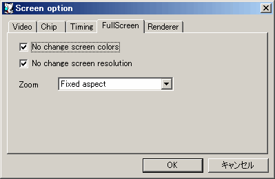

チェックすると フルスクリーン時に画面の色数を変更しません（推奨）。
チェックすると フルスクリーン時に画面の解像度を変更しません（推奨）。
フルスクリーン時の拡大モードを設定します。
| 項目名 | 内容 |
|---|---|
| None | ズームを無効にします。画面解像度に関わらず実サイズで表示されます。 |
| Fixed Aspect | 画面比を維持したまま拡大表示します。 |
| Adjust Aspect | 画面比を維持したまま拡大表示します。Fixed Aspectと若干違うようですが違いはよく分かりません(^_^; |
| Full | 画面比を無視してスクリーン全体に表示します。 |
| Integer multiple | 画面に表示出来る最大の整数倍率で表示します。 |